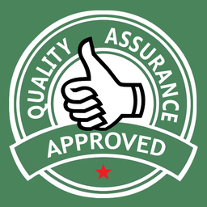

Quality Assurance

What is QA ?
Q A
- Systematic process
- To increase customer confidence, company credibility
- To better compete
- Quality == Meeting Requirement
“f u cn rd ths, u cn gt a gd jb n sftwr tstng.”
Why QA ?
Software Testing
- The measure of products and Services quality
- Work to explore new features
- executing program under positive and negative conditions
- Uncover many bugs (errors)
- Product Should match its requirement specifications
Tests
- Manual Test
- Automated Test
Manual Test
- the most primitive Test
- Helps to find bugs

this testing checks the quality of the system and delivers bug-free product to the customer
Automation Test
- Improve the development process of a software product in many cases
- Run fast and frequently
- Process that can be measured and repeated
- Build verification
Automation Test Tools in Mozilla
- Robocop
- Marionette
- Selenium
- WebDriverIO
Marionette
- Automation Driver for Mozilla's Gecko engine
- Remotely control
- Read attributes and properties of the DOM